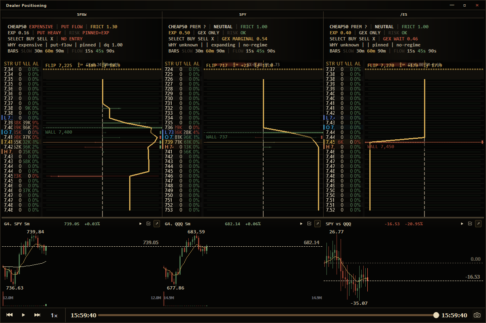

Dealer positioning, across the surface
Read SPX, SPY, and /ES positioning together with synchronized market context, built for fast interpretation.
Private market intelligence platform
 days to expire.
days to expire.
A performance-first desktop system combining options structure, dealer positioning, macro context, synchronized replay, execution intelligence, and strategy research.
Model-agnostic AI. Connect the model you trust, or run the full consensus layer.
Native full-surface replay under max stress. ~170 FPS peak.
Research + validation
The live system is only one layer. Historical analytics and forensic tooling make it possible to inspect performance, isolate regimes, and investigate recurring structure.

Read SPX, SPY, and /ES positioning together with synchronized market context, built for fast interpretation.

See the exact conditions behind every result: what worked, when it worked, where it failed, and whether the edge is repeatable.
Private demonstrations
The platform is privately operated today. Demonstrations and controlled external deployments are available for serious inquiries.